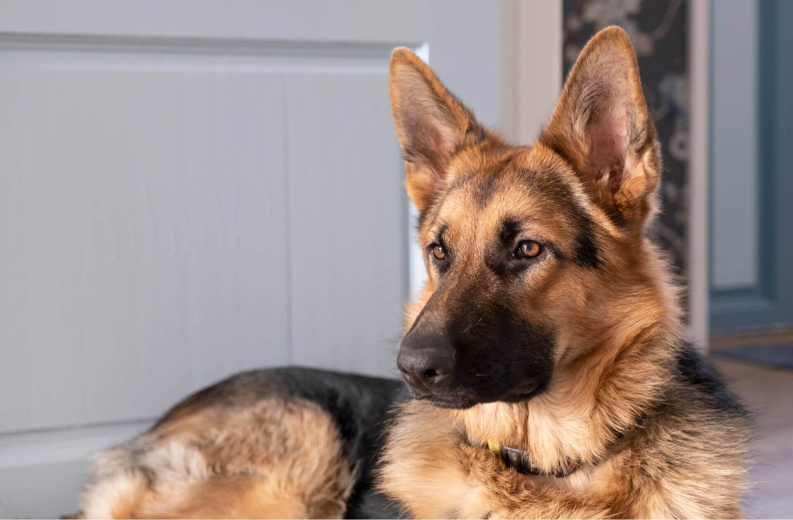
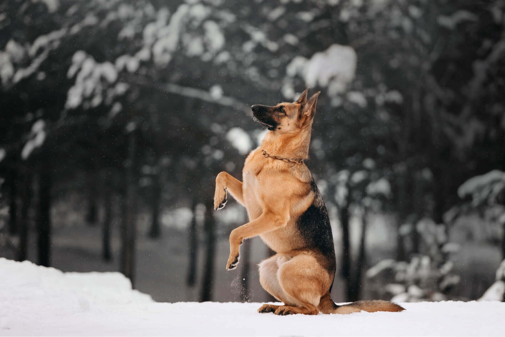
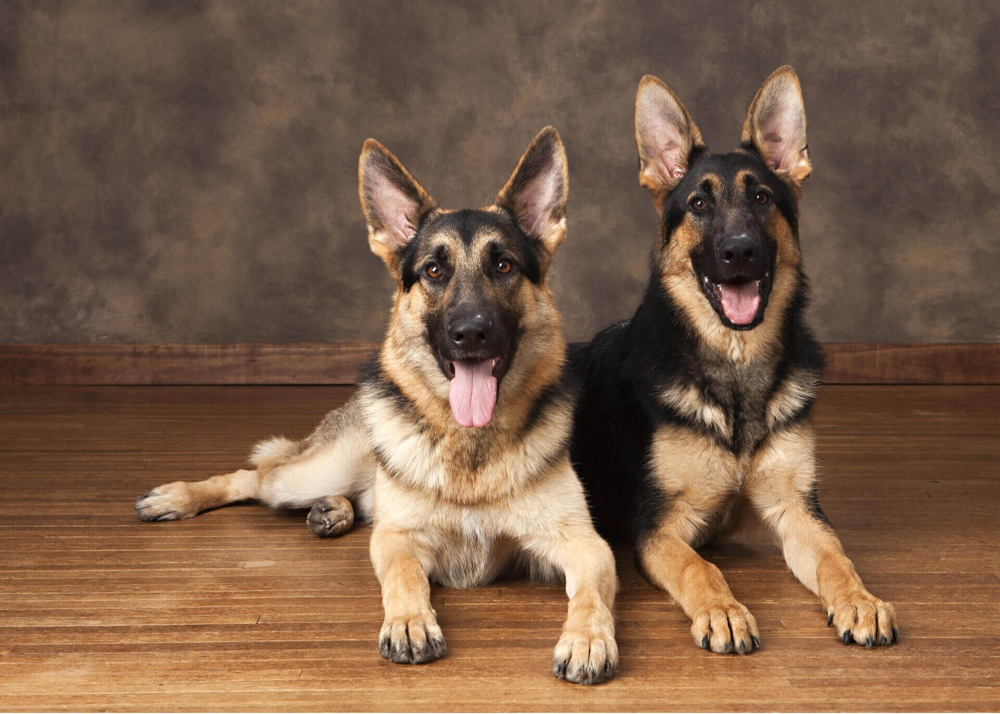
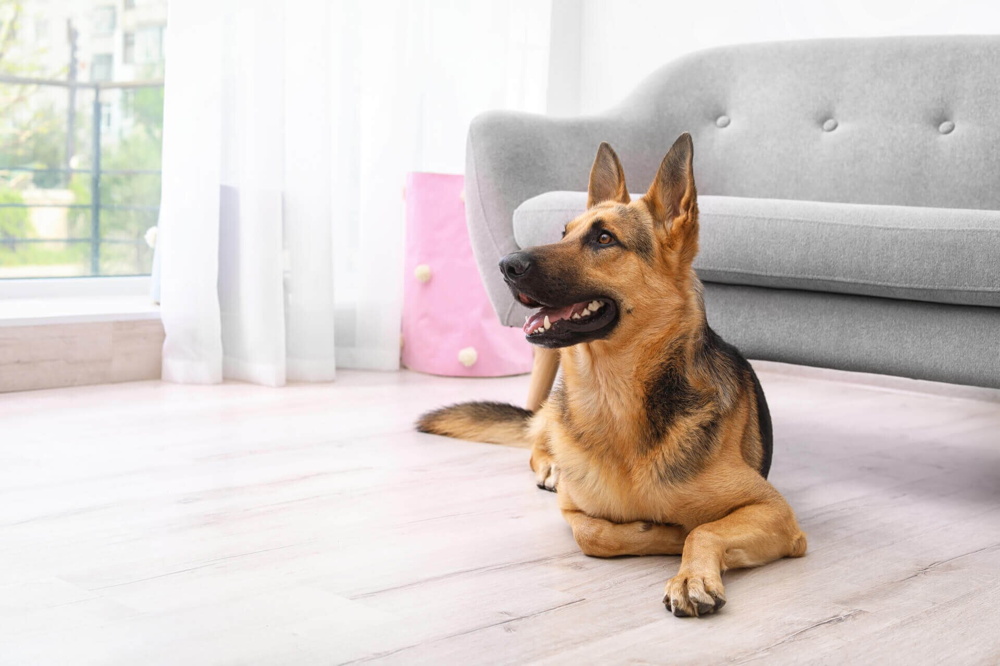
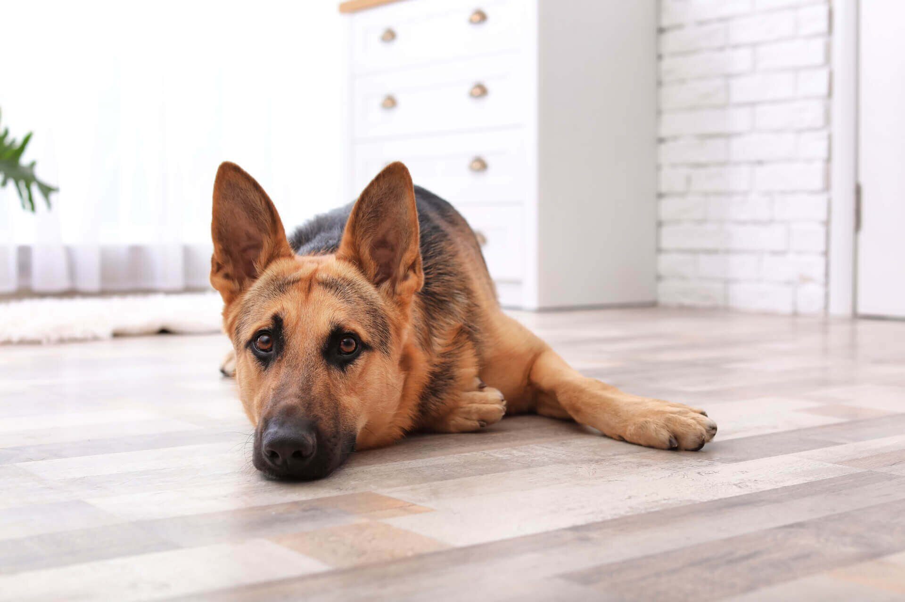
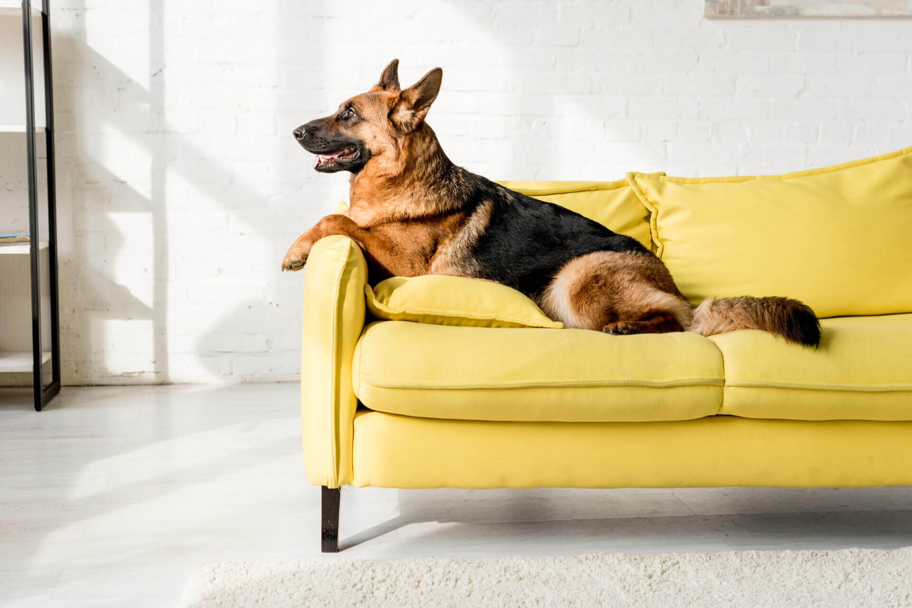
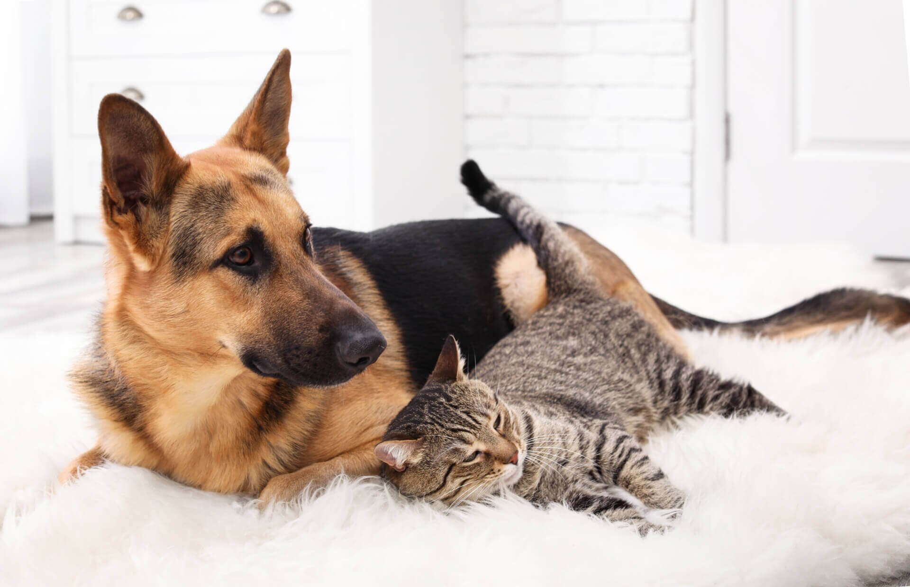
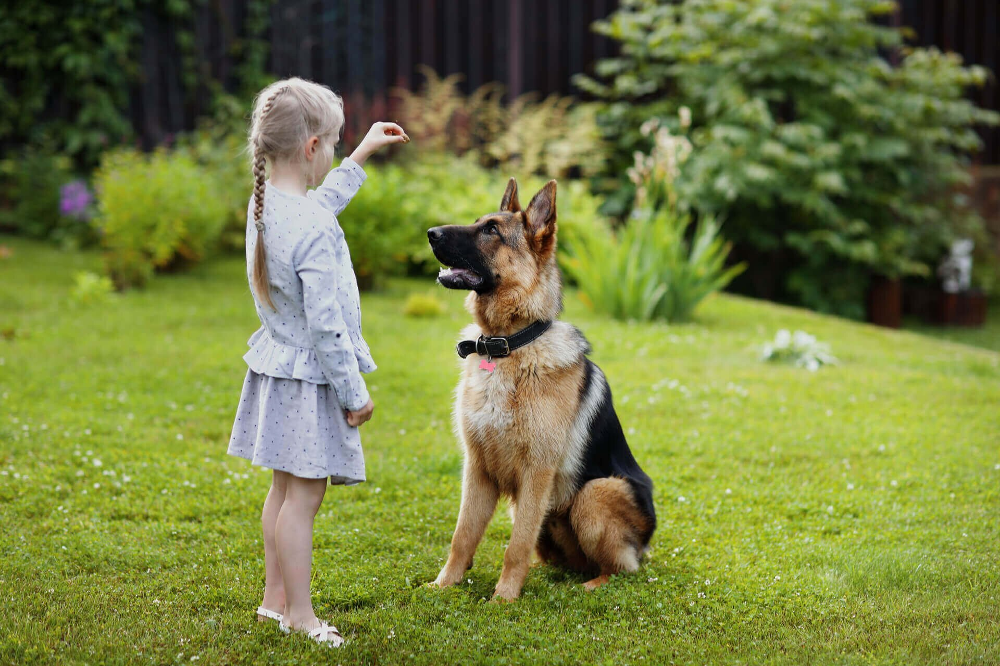
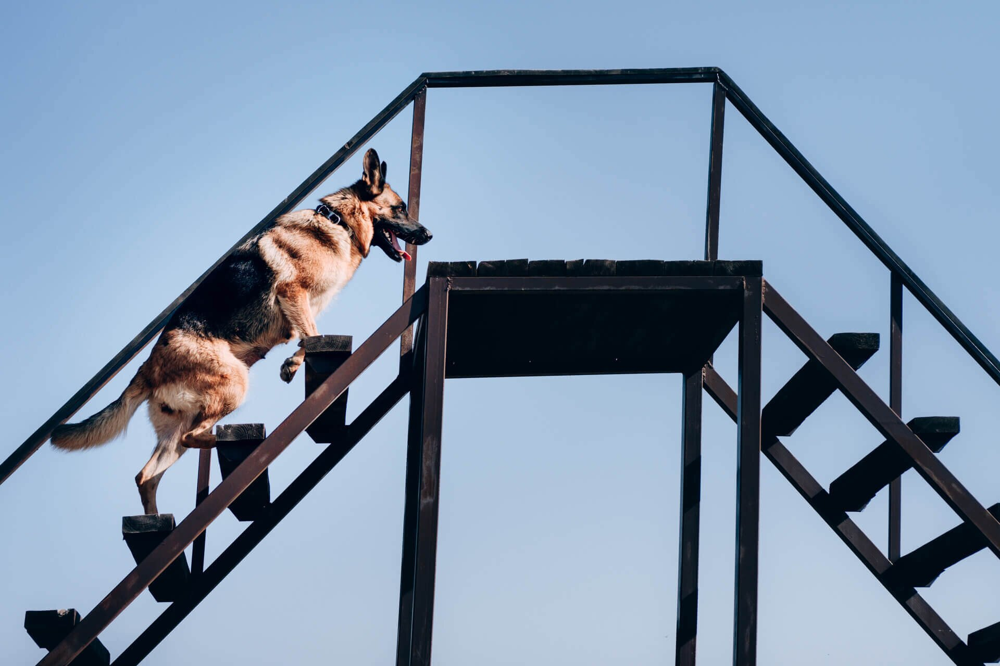

Образ немецкой овчарки – смышленая наклоненная набок морда с большими стоячими ушами – всплывает в голове первым, когда речь заходит о собаках. Действительно, это одна из самых распространенных в мире пород. Популярность немецких овчарок не зависит от моды. Умная, послушная, с высокими охранными качествами, легко поддающаяся дрессировке – эта собака подойдет и для домашнего содержания в городе или сельской местности, и для службы в различных структурах, и для спорта.
ИСТОРИЯ ПОРОДЫ
Утверждение стандарта. Порода впервые была описана в 1899 году, когда в Германии, в городе Аугсбург, Клубом любителей породы во главе с Максом фон Штефаницем был составлен первый стандарт немецкой овчарки. Энтузиаст породы Макс Эмиль Фредерик фон Штефаниц был военнослужащим и какое-то время работал в Ветеринарном Колледже. Он обладал знаниями в области биологии, ветеринарной медицины и анатомии животных. Его интересовали рабочие собаки из Центральной и Южной Германии, и так вышло, что первым официальным представителем породы стал самец Макса фон Штефаница по кличке Хоранд фон Графрат – именно к нему восходят родословные древа всех современных немецких овчарок. Собаки, похожие внешне на волков, с высокими стоячими ушами прекрасно пасли овец и защищали фермерские хозяйства. Так постепенно сформировался костяк поголовья пастушьих и рабочих собак.
Распространение в мире. В 1914 году Клуб Любителей породы в Германии организовал демонстрацию рабочих качеств немецкой овчарки и ее возможного применения в армейской службе. В Первую Мировую Войну эти собаки стали помощниками солдат немецкой армии и армии Антанты. Ценителей породы «немецкая овчарка» во всем мире становилось все больше и больше. Собаки успешно осваивали службу в армии и полиции, помогали фермерам и спасателям, становились домашними любимцами и компаньонами. Их внешность претерпевала небольшие изменения, но в целом стандарт породы оставался неизменным. Вторая Мировая Война нанесла большой урон мировой экономике. Собаководство тоже пострадало: много собак погибло на полях войны, разведением занимались очень мало.
Развитие породы. После Второй Мировой Войны и разделения Германии развитие породы вышло на новый виток. Эти замечательные собаки снова стали популярны, начало расти поголовье, проводились выставки и испытания рабочих собак. Последний раз стандарт немецкой овчарки претерпел серьезную редакцию в 1991 году. Но внешность этих собак осталась узнаваемой со времен Макса фон Штефаница до наших дней.
ХАРАКТЕРИСТИКА ПОРОДЫ
Развитие породы. После Второй Мировой Войны и разделения Германии развитие породы вышло на новый виток. Эти замечательные собаки снова стали популярны, начало расти поголовье, проводились выставки и испытания рабочих собак. Последний раз стандарт немецкой овчарки претерпел серьезную редакцию в 1991 году. Но внешность этих собак осталась узнаваемой со времен Макса фон Штефаница до наших дней. Немецкая овчарка – крупная собака. Рост в холке может варьироваться от 55 до 65 сантиметров. Собака пропорционально сложена, спортивная, мускулистая. Есть короткошерстная и длинношерстная разновидность немецких овчарок. Чаще всего встречаются особи черного, черно-подпалого, зонарно-серого окраса.Темперамент уравновешенный, спокойный. Такой темперамент в сочетании с высокой обучаемостью немецких овчарок позволяет использовать их в спорте, караульной или пастушьей службе. Также это превосходная собака-компаньон.
ОСНОВНЫЕ МОМЕНТЫ – ПЛЮСЫ И МИНУСЫ ПОРОДЫ
Легко дрессируется, послушная; пригодна для службы в полиции, армии; может состоять в службе спасения, быть поводырем; может использоваться в различных видах спорта с участием собак; неприхотлива в уходе, может жить в доме или на улице (в вольере); не агрессивна, при должном воспитании может жить вместе с детьми, другими собаками, кошками; требует дрессировки; может иметь проблемы со здоровьем.
 ВНЕШНОСТЬ НЕМЕЦКОЙ ОВЧАРКИЛегко дрессируется, послушная; пригодна для службы в полиции, армии; может состоять в службе спасения, быть поводырем; может использоваться в различных видах спорта с участием собак; неприхотлива в уходе, может жить в доме или на улице (в вольере); не агрессивна, при должном воспитании может жить вместе с детьми, другими собаками, кошками; требует дрессировки; может иметь проблемы со здоровьем. ВНЕШНОСТЬ НЕМЕЦКОЙ ОВЧАРКИ Немецкие овчарки – собаки крепкого спортивного телосложения. Голова клинообразная, высокие стоячие уши, темные глаза, черная мочка носа, мускулистые конечности с выраженными углами, немного скошенный круп (задняя часть туловища) и мощная грудная клетка – все это отличительные особенности внешности немецких овчарок.
ХАРАКТЕР НЕМЕЦКОЙ ОВЧАРКИ
Характер этих собак прописан в стандарте. Уравновешенный, спокойный темперамент – основа для собаки-компаньона или рабочей собаки.
Немецкая овчарка предана своему хозяину, но при этом при правильном воспитании готова работать и с другим проводником. Это важное качество для служебной собаки. Овчарки не проявляют агрессии без причины, не должны быть истеричны и крикливы. Представители данной породы очень внимательны, умны, неутомимы в игре и выносливы в физических нагрузках. Обычно они легко ладят с детьми и другими животными. Это одни из самых надежных собак-компаньонов. Немецкие овчарки могут быть нетерпимы к кошкам, если не выросли вместе с ними. Или принимать «своих» кошек, но охотиться на других на улице. К собакам же они чаще всего дружелюбно настроены, но могут проявить ответную агрессию, если вовлечь их в драку. Овчарки любят детей своих хозяев, готовы охранять их на прогулке и дома. К детям и взрослым на улице эти собаки относятся нейтрально, но, если ребенок начнет кидать немецкой овчарке мячик или палочку, собака с удовольствием вступит в игру.
ВОСПИТАНИЕ И ДРЕССИРОВКА
ВОСПИТАНИЕ И ДРЕССИРОВКА Чтобы немецкая овчарка стала надежным спутником на долгие годы, необходимо уделять достаточное время ее воспитанию и дрессировке. Тогда смышленый щенок станет полноценным членом семьи, и взаимное общение будет приносить радость. Прежде чем завести щенка немецкой овчарки, рекомендуется подумать, кто и когда будет ею заниматься. Частично дрессировку можно проводить со специальным тренером-кинологом на индивидуальных или групповых занятиях. На таких занятиях отрабатываются команды, навыки хождения рядом, социального поведения. Однако основное воспитание должно проходить в семье. Именно дома и на прогулках собака учится правильно реагировать на других людей и животных, не подбирать съедобные и несъедобные предметы с земли, вести себя спокойно, уравновешенно. Собаки этой породы подойдут опытным и увлеченным владельцам.
Интересно, что немецкие овчарки рабочего разведения наследуют способности к дрессировке у своих предков. Поэтому для спорта или службы надо выбирать щенка именно таких линий. Лакомство – большой помощник в процессе дрессировки. Для поощрения можно использовать PRO PLAN® BISCUITS для взрослых собак всех пород и для собак в возрасте от 9 месяцев. Эти угощения способствуют поддержанию здоровья зубов и десен, а также помогают пищеварению. Однако представители этой породы могут легко работать за поощрение игрой, а не едой. Для таких собак мячик на веревочке становится главным объектом внимания и способен отвлечь даже от пробегающей мимо кошки. Немецкие овчарки готовы к долгим играм с пулером, тарелкой фрисби, палкой или мячом. Они практически не утомляются на прогулках. Выводите собаку на длительные прогулки с физическими упражнениями и дрессировкой, чтобы дома у нее не было соблазна грызть мебель или портить обувь. Представители породы «немецкая овчарка» – собаки очень интеллектуальные. Поэтому прогулок только для справления нужды для них недостаточно. Им обязательно нужны интеллектуальная активность и подвижность – тренировки, дрессировка, игры.
